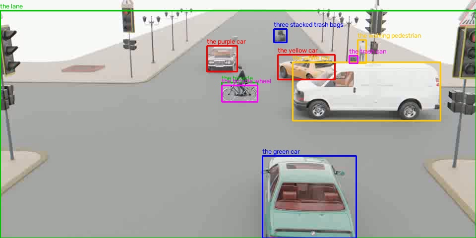
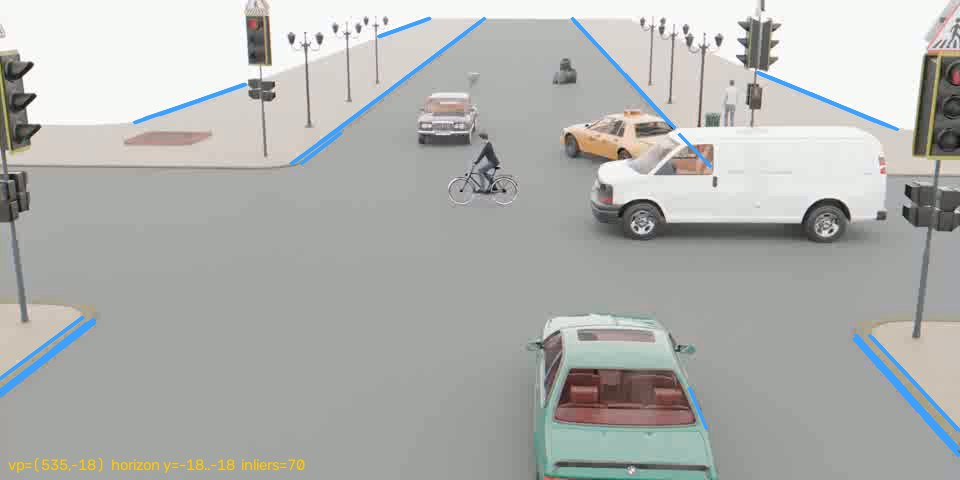
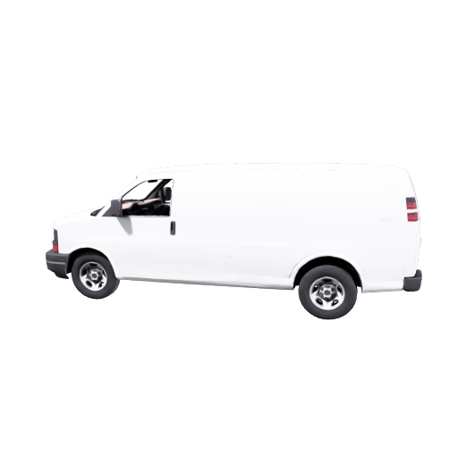
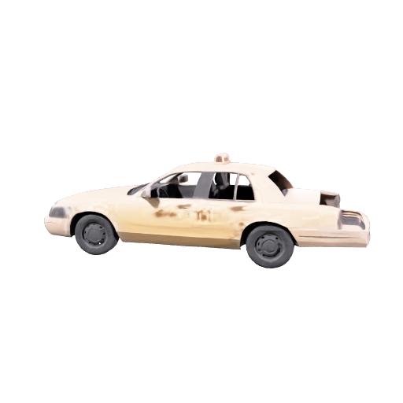
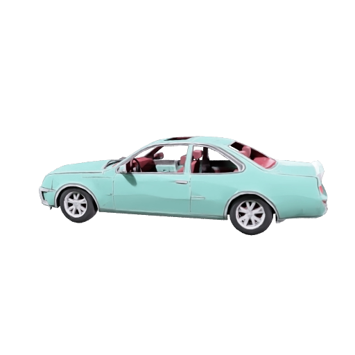

把在 simulation_0300 上得到的 v7 模型（网格 + 地面平面 + 匀加速）推广到多物体场景的第一次测试
| video_id | simulation_0060，类型 A3MC：加速度 prior，三维，多物体，原始背景 |
| prior | acceleration of the white car = 4 m/s^2（"白车"其实是一辆白色面包车） |
| depth_info | human、yellow car、white car、bike 四个物体在 0.58 s 和 1.58 s 的相机距离，共 8 条 |
| 问题 | 13 道：黄车平均速度，车道宽，白车长，黄车长、高，自行车轮直径，行人平均速度、身高，自行车平均速度，绿车宽，紫车宽，垃圾袋高，垃圾桶高 |

阶段 A，prior 物体定相机和地面。对白色面包车做 v7 式联合拟合：Meshy 网格、匀加速、地面平面、|a| = 4 约束，求出焦距 f 和平面（法线 + 距离）。为了让平面稳定，加入了两类来自其他物体的信息：所有有 depth_info 的物体在锚点时刻的"脚底像素 + 距离"都必须落在平面上（10 个地面接触点）；以及由"典型身高"给出的焦距弱投票（行人 1.7 m 最可靠，车 1.5 m 次之）。
阶段 B，其余物体共用相机和地面。每个物体用固定的 f 和平面单独拟合：有网格用网格，没有就按名字选基元（行人、自行车、紫车用长方体，垃圾桶用圆柱）；有 depth_info 的用自己的深度锚点，没有的靠"站在地面上"确定深度；行人和自行车用匀速模型而不是匀加速。尺寸的弱先验按物体名查表（车长 4.5、行人高 1.7 等，σ 约 33%）。
地平线约束。路面的边缘和车道线是地面上的平行线，在图像里汇聚于消失点，消失点落在地平线上。用 LSD 提取线段、RANSAC 求主消失点（70 条线段一致，位于 (535, −18)），得到地平线 y ≈ −18，稍高于画面顶边。地平线是平面无穷远线的像，l = K⁻ᵀn，同时约束俯仰 × 焦距和侧倾。加入后相机侧倾从 2.5° 回到 0°，俯仰从 18° 变为 15°，黄车平均速度从 3.67 提到 4.13（真值 4.08）。没有地面线的场景（如 simulation_0300 的空背景）会自动跳过。

顺手修的三个工程问题。SAM 2 掩码偶尔溢出到相邻物体（出租车的框在第 45、59 帧吞掉了绿车），按面积和长宽比的滚动中位数剔除离群帧；被画面边缘截断的框，贴边那一侧不参与残差；Meshy 的输入裁图改为用 SAM 2 掩码抠出物体，否则一张图里的多个物体会被一起建模。
| 物体 | 形状 | 拟合尺寸 L × W × H（或 D × H） | 框残差 px |
|---|---|---|---|
| the white car | mesh | 5.87 × 2.24 × 2.13 | 14.0 |
| the yellow car | mesh | 4.50 × 1.72 × 1.29 | 13.0 |
| the bicycle wheel | cylinder | 1.43 × 1.10 | 12.3 |
| the walking pedestrian | box | 0.50 × 0.40 × 1.70 | 2.9 |
| the bicycle | box | 1.80 × 0.50 × 1.10 | 9.7 |
| the green car | mesh | 4.45 × 1.66 × 1.29 | 24.0 |
| the purple car | box | 4.50 × 1.90 × 1.50 | 4.4 |
| three stacked trash bags | box | 0.80 × 0.80 × 0.90 | 4.0 |
| the trash can | cylinder | 0.60 × 0.90 | 3.3 |
拟合出的相机：焦距 959 px，高 5.4 m，俯仰 15°，侧倾 0.0°。按真值反推这个场景的焦距约 1000 px。

Meshy 网格。左为白色面包车。黄色出租车和绿车也各有一个网格（见下）。共生成 6 次、180 credits：前两次因裁图混入他物作废，第二轮掩码抠图但选到了掩码溢出的帧仍作废，第三轮才可用。其中一次"黄车"的失败产物恰好是绿车，直接拿来用了。


把拟合结果当成一个场景来看：相机在原点，地面是拟合出的平面，每个物体按拟合尺寸放在逐帧位姿上，三辆车用 Meshy 网格、其余用基元。查看器上半是叠加视频（可切换为原始视频），下半是三维场景，两者共用一个时间轴，视频是主时钟，播放、拖动都同步。"叠加到视频"模式会把三维场景按拟合出的相机半透明画在视频画面上：网格应与路面重合、模型应与车身重合，错开的地方就是拟合误差。默认停在 depth_info 给出距离的关键帧 t = 0.58 s。
| 问题 | 真值 | v1 流水线 同一组轨迹 | 场景拟合 | 路径 |
|---|---|---|---|---|
| What is the average speed of the yellow car in m/s？ | 4.075 | 14.4 0.0 | 4.27 1.0 | fit-average-speed |
| What is the width of the lane in meters? | 11.8 | 3.4 0.2 | — 0.0 | object-not-fitted |
| What is the length of the white car in meters？ | 6 | 1.61 0.2 | 5.87 1.0 | fit-size |
| What is the length of the turning yellow car in meters? | 5.44 | 1.25 0.2 | 4.5 0.8 | fit-size |
| What is the height of the turning yellow car in meters? | 1.65 | 0.588 0.3 | 1.29 0.7 | fit-size |
| What is the diameter of the bicycle wheel in meters? | 0.56 | 0.385 0.6 | 1.43 0.0 | fit-size |
| What is the average speed of the walking pedestrian in m/s? | 1.3 | 0.0567 0.0 | 1.21 0.9 | fit-average-speed |
| What is the height of the walking pedestrian in meters? | 1.87 | 0.378 0.2 | 1.7 0.9 | fit-size |
| What is the average speed of the bicycle in m/s? | 5.33 | 1.66 0.3 | 5.47 1.0 | fit-average-speed |
| What is the width of the green car in meters? | 2.03 | 2 1.0 | 1.66 0.8 | fit-size |
| What is the width of the purple car in meters? | 1.86 | 0.641 0.3 | 1.9 1.0 | fit-size |
| What is the height of three stacked trash bags in meters? | 1.34 | 0.207 0.1 | 0.901 0.6 | fit-size |
| What is the height of the trash can in meters? | 0.6 | 0.193 0.3 | 0.9 0.5 | fit-size |
| 平均 MRA（未答计 0） | 0.28 | 0.71 | ||